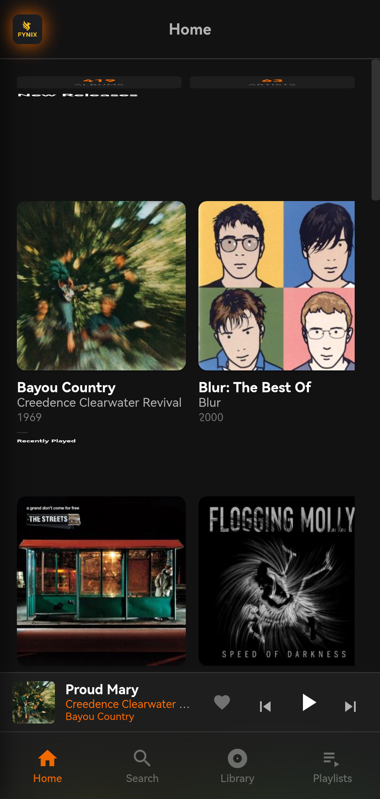
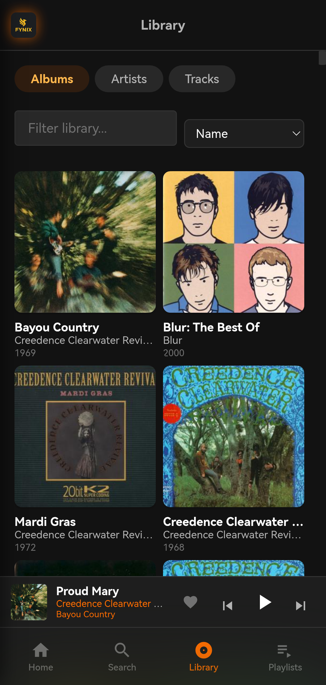
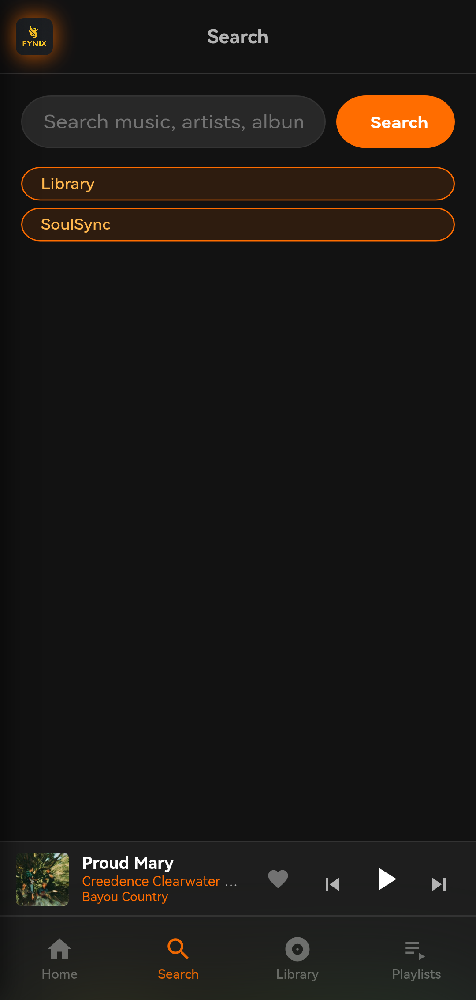
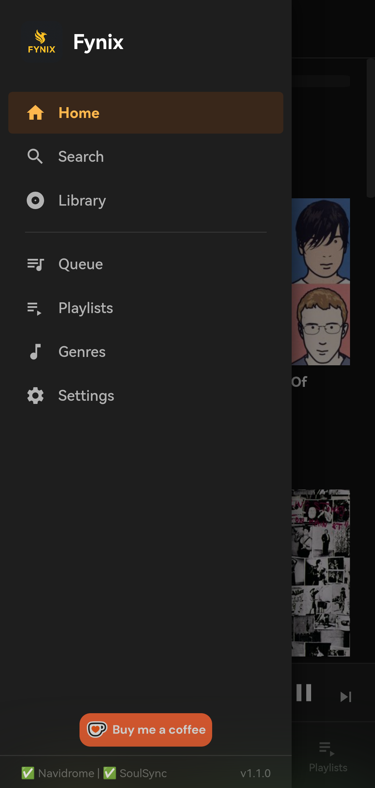
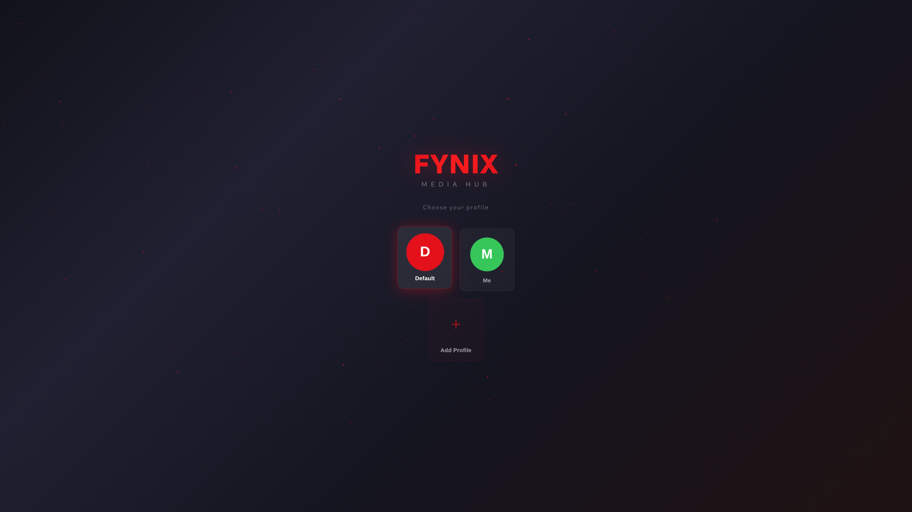
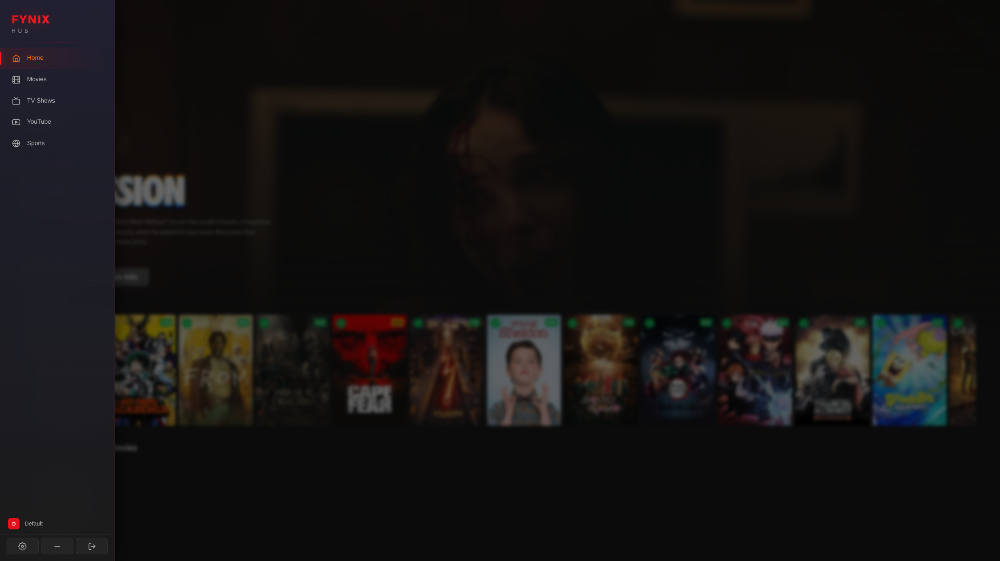
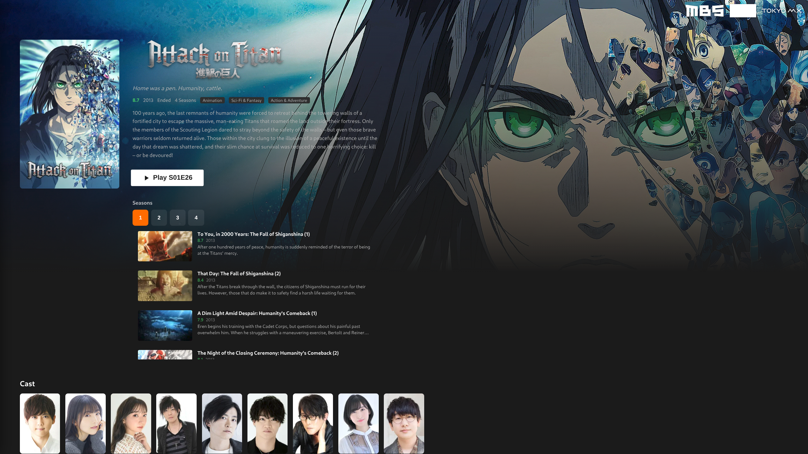
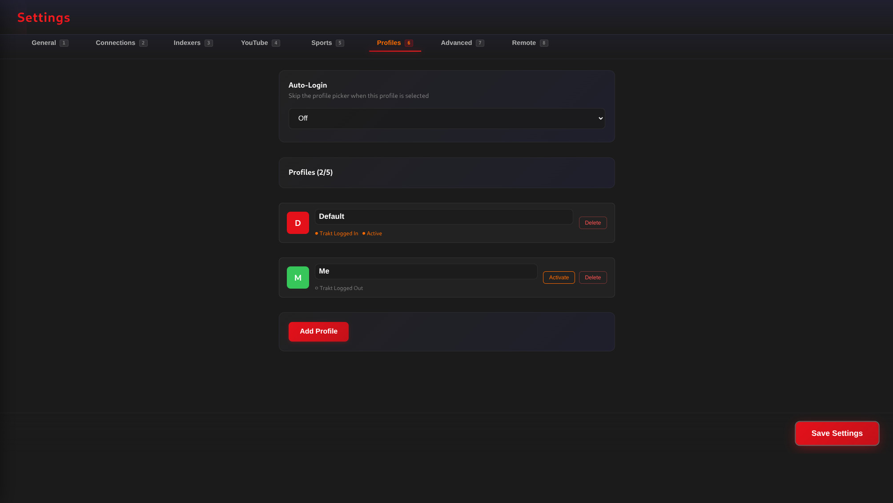

Open Source Software.
Built for Linux.
Privacy First.
A growing suite of open source software designed for Linux, privacy, and beautiful user experiences.
A light-weight, self-contained Android music player that connects to Navidrome and SoulSync for browsing, streaming, and managing your music library.
An all-in-one Linux media hub providing access to movies, TV shows, YouTube, sports replays and other user-configured media sources through a beautiful unified interface.
Public beta — download the latest release for Linux below, or use the interactive TUI installer.
A lightweight Android TV companion app that connects to your Fynix Hub desktop instance, letting you browse your library, control playback with a DPad-optimized UI, and sync watch history from your phone or tablet.
Companion app in active development
A privacy-focused, fully open-source Android satellite navigation application offering modern routing without sacrificing user privacy.
In development
Every Fynix application is crafted with core values in mind.
Optimised for performance. Fynix applications are lightweight, responsive, and designed to make the most of your hardware without bloat.
No tracking, no telemetry, no data collection. Your data stays on your devices. Fynix is built for users who value their privacy.
Every line of code is open and auditable. Fynix is built in the open with contributions welcome. No proprietary lock-in, ever.
Fynix Player is fully compatible with Graphene OS hardened security and memory allocation policies. No special configuration is required — the app works out of the box on Graphene OS devices with all hardened memory protections enabled.
Screenshots from the Fynix Player Android application.




Screenshots from the Fynix Hub desktop application (v2.2.4) for Linux.




The journey ahead for the Fynix Suite.
Version 1.0 launched — Android music player with Navidrome and SoulSync support.
Fynix Hub private beta testing completed. All-in-one Linux entertainment hub.
Public beta launched. Native Linux packages (deb, rpm, AppImage, zip) with auto-updater.
Fynix Hub v2.2.4 released as a complete Linux media hub with TUI installer, live sports, Sports ReplayZone integration, and Android TV companion.
Tighter integration with Usenet providers and debrid services for faster, more reliable streaming.
Android TV companion app (Kotlin/Compose) with DPad navigation, remote control, watch history sync, and TMDB proxy.
In development — privacy-first Android navigation built with OpenStreetMap.
Optional end-to-end encrypted sync across devices.
Community plugin API for extending media sources, metadata providers, and custom scrapers.
Community plugin ecosystem for extending functionality.
iOS and Android companion apps to complement the desktop experience.
Latest stats from the Fynix Player repository.
Latest commit: —
If you enjoy Fynix, consider supporting ongoing development. Every contribution helps keep the project alive and growing.
Support on Ko-fiFynix applications do not host, distribute, or provide any media content. Users are responsible for supplying their own media sources where required. Any information, metadata, or links presented by Fynix are aggregated from publicly accessible websites and services. The developer of Fynix accepts no responsibility for how the software is used or for the availability, legality, or content of third-party services accessed through it. Users are responsible for ensuring they comply with all applicable laws and the terms of any services they use.